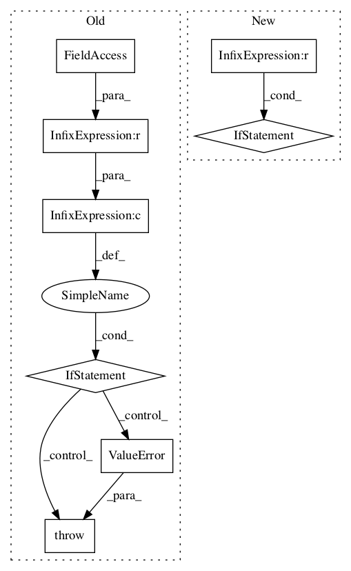

93c5a8952f5a350c78243bc1ffa47b07f5f93721,tensorflow_transform/coders/example_proto_coder.py,_FixedLenFeatureHandler,__init__,#_FixedLenFeatureHandler#Any#Any#,122

Before Change
self._value_fn = _make_feature_value_fn(feature_spec.dtype)
self._shape = feature_spec.shape
self._rank = len(feature_spec.shape)
if self._rank > 0 and self._default_value:
raise ValueError("FixedLenFeature %r got default value for rank > 0, "
"only scalar default values are supported"
% (self._name,))
if isinstance(self._default_value, list):
raise ValueError("FixedLenFeature %r got non-scalar default value, "
"only scalar default values are supported" %
(self._name,))
After Change
for dim in feature_spec.shape:
self._size *= dim
default_value = feature_spec.default_value
if default_value is not None:
np_default_value = np.asarray(default_value)
if list(np_default_value.shape) != self._shape:
raise ValueError(
"FixedLenFeature %r got default value with incorrect shape" %
(self._name,))
default_value = np_default_value.reshape(-1).tolist()
self._default_value = default_value
@property
def name(self):
In pattern: SUPERPATTERN
Frequency: 3
Non-data size: 8
Instances
Project Name: tensorflow/transform
Commit Name: 93c5a8952f5a350c78243bc1ffa47b07f5f93721
Time:
Author: null
File Name: tensorflow_transform/coders/example_proto_coder.py
Class Name: _FixedLenFeatureHandler
Method Name: __init__
Project Name: tensorflow/lattice
Commit Name: d82af58f7d48e6fcc7a1e8d9875a5140e3f9bcf1
Time:
Author: null
File Name: tensorflow_lattice/python/linear_layer.py
Class Name: Linear
Method Name: build
Project Name: asyml/texar
Commit Name: da37438735fd4b845bb0874562bd071865c480bb
Time:
Author: null
File Name: texar/modules/encoders/rnn_encoders.py
Class Name: RNNEncoderBase
Method Name: __init__